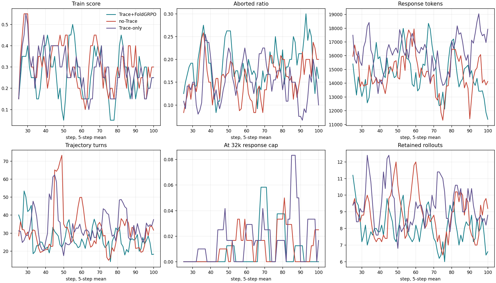
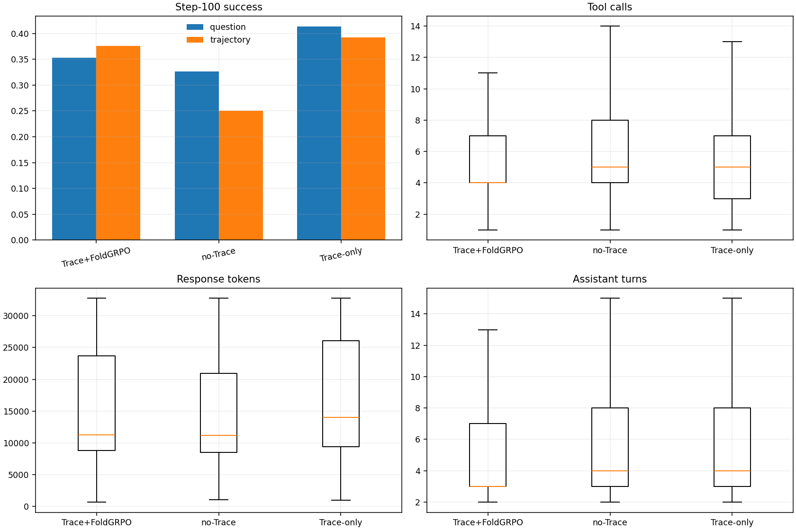
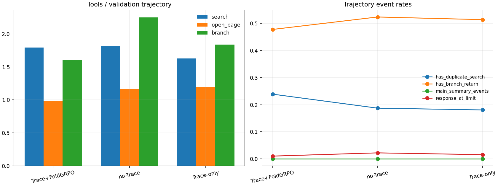

决策摘要
当前证据支持“Trace-only 改变了 rollout 行为并在本轮 validation 领先”，不支持“Trace-only 已稳定优于其它目标”。
实验口径与可比性
三组共享 Qwen3-8B、rollout n=2、max trajectory=5、32,768 response 上限和相同工具框架，但训练信号与运行履历存在实质差异。
| 设置 | FoldGRPO 权重 | TRACE α | Process reward | 运行履历 |
|---|---|---|---|---|
| Trace+FoldGRPO | 1 | 0.2 | flat | trace-recovery checkpoint 续训 |
| no-Trace | 1 | 0 | flat | fresh run |
| Trace-only | 0 | 0.2 | null | fresh run，较晚代码版本 |
Trace-only 仍计算环境 reward，也通过冻结 reference 对 gold answer 的条件似然获得局部 credit；但 outcome advantage 乘以 0，不直接进入 actor 更新。因此它不等于“完全看不到答案”，也不只是关闭一个简单开关。
训练表汇总 step 21-100 的 80 个连续 actor 状态；step-100 validation 使用完成第 100 次更新后的单一 checkpoint；独立评测使用导出的同阶段权重但采用不同 grader。三类结果只能并列验证方向，不能拼接为同一批 trajectory。
训练动态：没有持续上升证据
step score 是每个初始 gen_uid 的多 trajectory 先取最佳再平均，不是 raw trajectory 正确率。前后半比较显示三组后 40 步均低于前 40 步。
| 设置 | raw | retained | retained/step | step score | 前 40 步 | 后 40 步 | step 相关 | padding fraction | response tokens |
|---|---|---|---|---|---|---|---|---|---|
| Trace+FoldGRPO | 792 | 645 | 8.06 | 26.25% | 27.50% | 25.00% | -0.051 | 18.88% | 14,639 |
| no-Trace | 844 | 707 | 8.84 | 29.69% | 31.25% | 28.13% | -0.104 | 15.79% | 14,734 |
| Trace-only | 876 | 749 | 9.36 | 28.13% | 31.88% | 24.38% | -0.144 | 14.91% | 16,326 |

样本预算混杂
Trace-only 比 Trace+FoldGRPO 多保留 104 条 trajectory（+16.1%），也比 no-Trace 多 42 条（+5.9%）。raw 差异同时包含模型触发 branch 的行为差异和 PPO mini-batch padding，不能把更多样本带来的训练机会完全归因于目标函数。
长度异常应单列
Trace-only logged response tokens 比 Trace+FoldGRPO 高约 11.5%，但 generated tokens 略低。额外长度更可能来自 observation/context；这与 step-100 observation 统计一致，但阶段和加权方式不同，只能视为线索。
Step-100 验证：领先但不确定
question success 是“保存多轨迹任一 reward 成功”：对同题多条 trajectory 取最高 accepted 结果，再对 150 题平均；它不是 Pass@1。
| 设置/比较 | 问题成功 | Trajectory 成功 | 差值 | 未校正 p 值 | 解释 |
|---|---|---|---|---|---|
| Trace+FoldGRPO | 53/150 (35.3%) | 110/293 (37.5%) | vs no-Trace +2.67pp | 0.636 | 无清晰差异 |
| no-Trace | 49/150 (32.7%) | 79/315 (25.1%) | 基线 | — | 点估计最低 |
| Trace-only | 62/150 (41.3%) | 126/321 (39.3%) | vs no-Trace +8.67pp | 0.066 | 有利方向，尚未确认 |
| Trace-only vs Trace+FoldGRPO | — | — | +6.00pp | 0.200 | 无清晰差异 |
配对主检验请见 全面轨迹诊断 的 exact McNemar；原 z-test 不再作为配对主展示。题目并非训练 seed 的独立重复，区间只描述 150 题有限样本的不确定性。

行为与上下文成本
成功率之外，Trace-only 的主要代价是更长的上下文与 observation；no-Trace 的突出问题是失败轨迹扩展明显。
| 设置 | tools | search | open | branch | return | turns | 重复 search | response tokens |
|---|---|---|---|---|---|---|---|---|
| Trace+FoldGRPO | 5.59 | 1.80 | 0.98 | 1.60 | 0.67 | 5.61 | 23.89% | 14,879 |
| no-Trace | 6.61 | 1.82 | 1.16 | 2.25 | 0.85 | 6.19 | 18.73% | 14,605 |
| Trace-only | 6.08 | 1.63 | 1.20 | 1.84 | 0.79 | 6.25 | 18.07% | 16,556 |

独立评测：未复现 validation 排序
当前同口径独立 150 题只覆盖 no-Trace 与 Trace-only；Trace+FoldGRPO 没有保存对应 local-Qwen 评测，不能补空或跨 grader 代替。
风险登记与下一阶段设计
当前结论的主要风险
- 单 seed：无法估计训练随机性的方差，题目级 CI 不能替代 seed 重复。
- 样本预算不等：retained trajectory 为 645 / 707 / 749，改变了实际训练机会与成本。
- 履历不完全同构：续训起点、process reward 和代码版本同时变化。
- grader 不一致：validation 与独立评测的判分路径不同，排序方向发生反转。
- 上下文成本：Trace-only 更长且触发 overlong masking，收益必须按 token/时间归一化。
建议的最小下一轮
推进 Trace-only 的最低条件可设为：matched seeds 上 question success 的均值持续领先；统一独立评测不再方向反转；按 context token 或 wall-clock 归一化后仍有收益；overlong masking 有明确处理且不偏置有效样本。
数据来源与复现材料
页面引用的数据、图和原始报告均随目录保存，可离线审计。
页面更新日期：2026-09-14；新增配对轨迹诊断页。增强统计直接由随附 CSV 计算；所有百分比显示可能因四舍五入产生 0.01pp 以内差异。